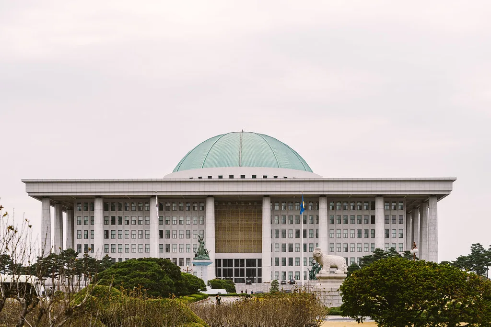
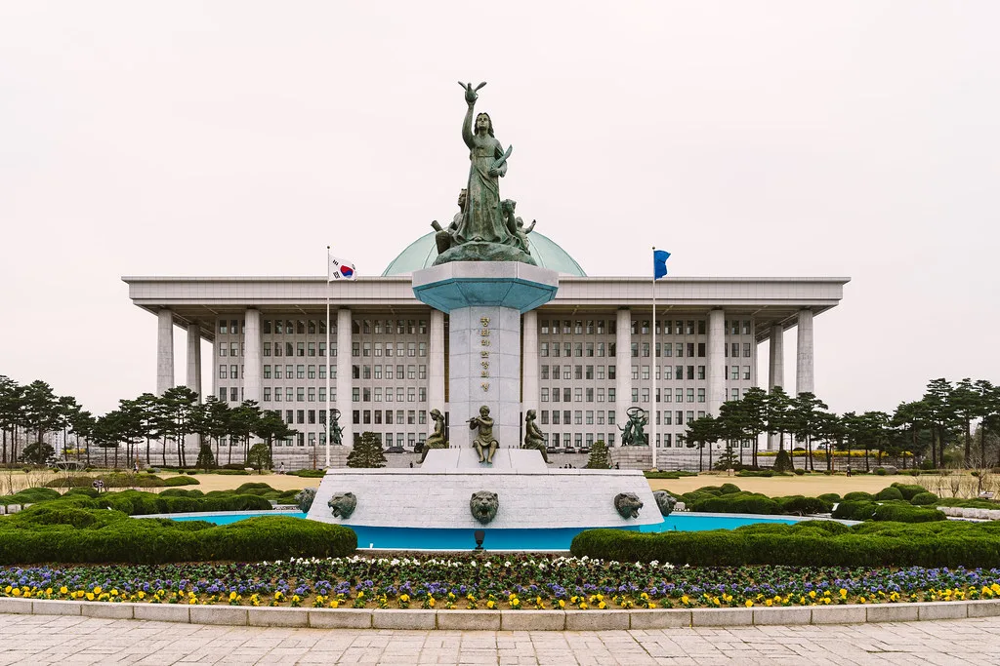

22대 후반기 정기국회 개회…100일간 인사청문·국감·예산 대치 예고
22대 국회 후반기 정기국회가 9월 1일 개회식을 열고 100일간의 일정에 들어갔다. 정기국회는 매년 9월 1일 시작해 12월 초까지 이어지는 정례 회기로, 국정감사와 대정부질문, 내년도 예산안 심사, 각종 법안 처리가 이 기간에 몰려 있어 흔히 '입법·예산 국회'로 불린다. 개회식에서는 국회의장의 개회사에 이어 교섭단체별 인사가 진행됐다. 여야는 개회와 동시에 인사청문회와 예산 심사를 둘러싸고 팽팽한 신경전에 들어갔다.
국회는 9월 3일 본회의를 시작으로 회기 운영에 속도를 낸다. 7일에는 더불어민주당, 8일에는 국민의힘 교섭단체 대표연설이 예정돼 있고, 9일부터 나흘간 분야별 대정부질문이 이어진다. 9일 정치, 10일 외교·통일·안보, 11일 경제, 14일 사회·교육·문화 순으로 국무위원을 상대로 정책 검증이 진행된다. 대정부질문은 최근 개각으로 새로 지명된 국무위원 후보자들의 인사청문회와 시기가 겹쳐 정치적 공방이 커질 수 있다.

이번 정기국회의 최대 쟁점은 2027년도 예산안이다. 정부는 800조원을 넘는 역대 최대 규모의 예산안을 편성해 국회에 제출할 예정이다. 국가재정법은 정부가 회계연도 개시 120일 전인 9월 3일까지 예산안을 국회에 내도록 규정하고 있다. 민주당은 인공지능과 미래산업, 청년 지원, 지역 균형발전, 국민 안전 분야에 재정을 더 투입해야 한다는 입장인 반면, 국민의힘은 대규모 재정 지출을 '포퓰리즘'으로 규정하고 대폭적인 감액 심사를 예고했다.
국정감사는 10월 6일부터 27일까지, 두 개 이상의 상임위를 겸임하는 의원이 속한 위원회는 30일까지 진행된다. 국정감사는 정부 각 부처의 1년 국정 운영을 국회가 총괄 점검하는 절차로, 매년 수백 개 기관이 대상에 오른다. 각 상임위는 소관 부처와 산하기관, 주요 공공기관을 상대로 현안을 따진다. 최근 잇따른 통신·금융사 해킹 사고, 부동산 시장과 가계부채, 의료체계 문제 등이 상임위별 쟁점으로 거론된다. 국정감사가 끝나면 예산결산특별위원회의 예산안 심사가 본격화한다.
이재명 정부가 최근 단행한 중폭 개각도 정기국회 초반 흐름을 좌우할 변수다. 경제부총리와 법무·국방 등 여러 부처 장관 후보자가 새로 지명되면서 국회는 정기국회 일정과 별도로 인사청문회를 열어야 한다. 야당은 후보자들의 자질과 정책 방향을 집중적으로 검증하겠다고 밝혔고, 여당은 국정 공백을 줄이기 위해 신속한 인준이 필요하다고 맞서고 있다.

법안 처리에서도 여야 간 우선순위가 엇갈린다. 정부·여당은 인공지능 관련 법의 후속 조치, 민생 지원과 지역 성장 관련 법안, 사법·검찰 제도 개편 법안 등을 정기국회에서 매듭짓겠다는 목표를 세웠다. 국민의힘은 재정건전성 확보와 규제 완화, 정부 권한을 견제하는 장치 마련을 강조하며 일부 법안에는 반대 입장을 분명히 하고 있다. 여야는 상임위 단계에서부터 법안별로 처리 속도와 순서를 조율할 것으로 보인다.
정기국회는 정부 예산과 정책이 1년 단위로 확정되는 자리인 만큼, 이 기간 논의의 결과는 내년 국정 운영의 밑그림이 된다. 다만 개회 첫날부터 예산 규모와 인사, 입법 방향을 놓고 여야 입장차가 뚜렷해 회기 내내 강 대 강 대치가 이어질 수 있다는 관측이 나온다. 국회가 12월 2일로 정해진 예산안 처리 법정시한을 지킬 수 있을지도 이번 정기국회의 시험대가 될 전망이다. 예산안이 시한을 넘겨 처리되면 새해 사업 집행에 차질이 빚어지고, 최악의 경우 전년도에 준하는 예산만 집행하는 준예산 우려까지 나올 수 있다.